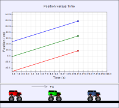

In physics we often talk about distance traveled and displacement to describe how the position of an object changes. Sometimes we even (appear to) use these terms interchangeably. However, they are not necessarily the same. Distance traveled is just that: the distance an object travels. The displacement of an object is a comparison of the final position to the initial position: Δx = x - x0, the distance displaced during the object's motion. Can you think of an example in which distance traveled and displacement are the same or different?
Shown are two animations, each with three toy monster trucks and their position vs. time graphs (position is given in centimeters and time is given in seconds). The arrow in each animation shows where the origin of coordinates is located. All measurements of position are with respect to this origin. Animation 1 shows the three monster trucks starting at different positions at t = 0 s. During this animation, for each individual truck, the distance traveled is equal to the displacement.